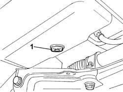
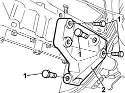
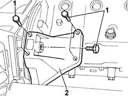
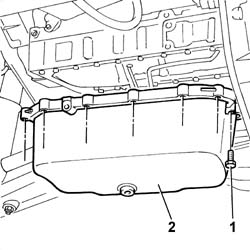

1020A10 CRANKCASE SUMP - R&R AND REPLACE GASKET
- Path
- Procedures > 10 ENGINE UNIT > 1020 CRANKCASE SUMP AND COVERS > 1020A CRANK CASE OIL SUMP > 1020A10 CRANKCASE SUMP - R&R AND REPLACE GASKET
- Kind
- repair procedure (removal / refitting; the operation number is the code)
- Applies to
- engines: 2.3 JTD 16V; all production periods
- Interactive page
- https://sloeber94.github.io/elrnDB-fDct/en/#/244000653
Applies to: engines: 2.3 JTD 16V; all production periods
 Removing
Removing
 Refitting
Refitting- Position the vehicle on the lift.
Op. 7055B54 UNDER-ENGINE GUARD - R R
1. Undo the drain plug and collect the engine oil in a suitable container.

Applies to: engines: 2.3 JTD 16V; all production periods
1. Undo the bolts fixing it to the gearbox and to the cylinder block/crankcase.
2. Remove the front support joining the engine to the gearbox.

Applies to: engines: 2.3 JTD 16V; all production periods
1. Undo the bolts fixing it to the gearbox and to the cylinder block/crankcase.
2. Remove the rear mount joining engine and gearbox.

Applies to: engines: 2.3 JTD 16V; all production periods
1. Undo the perimeter retaining bolts securing the engine oil sump to the crankcase.
2. Remove the engine oil sump with gasket.

Applies to: engines: 2.3 JTD 16V; all production periods
Refitting
Removing- With the oil sump on the bench, remove the metal sump frame and replace the gasket inside.
- Clean the oil sump and engine crankcase surfaces.
- Fit the oil sump and support using a hydraulic lift.
- Tighten the oil sump retaining bolts to torque.
Value - daNm | Fastening | Component | Ø | |
|---|---|---|---|---|
- | 1 daNm | bolt | M6 |
Value - daNm | Fastening | Component | Ø | |
|---|---|---|---|---|
- | 2.5 daNm | bolt | M6 |
- Fit the rear engine gearbox union mount and tighten the retaining bolts and nut to torque.
Value - daNm | Fastening | Component | Ø | |
|---|---|---|---|---|
- | 6 daNm | bolts | - | M10X1.5 |
- Fit the front engine gearbox union mount and tighten the retaining bolts and nut to torque.
- Fit the front engine gearbox union mount and tighten the retaining bolts and nut to torque.
Value - daNm | Fastening | Component | Ø | |
|---|---|---|---|---|
- | 6 daNm | bolts | - | M10X1.5 |
- Tighten the engine oil sump plug and replace the gasket.
- Fill the vehicle with suitable engine oil.
Op. 0010T11 ENGINE OIL CHECK LEVEL AND TOP UP
Op. 7055B54 UNDER-ENGINE GUARD - R R
- Remove the vehicle from the lift.